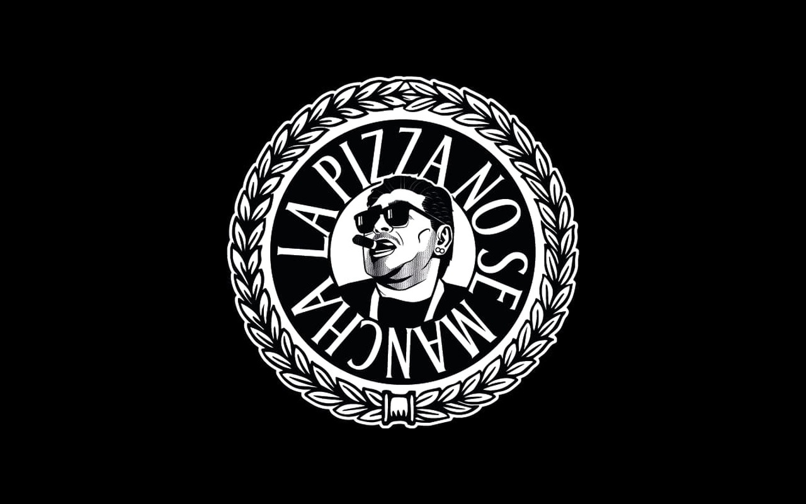

La Pizza No Se Mancha
Rotisería de la ciudad de Santa Fe. Gestión de cuenta de Instagram. En este proyecto se busca ampliar el alcance y visualización de la marca para obtener como resultado la ampliación de la cartera de clientes actuales.
- Community management